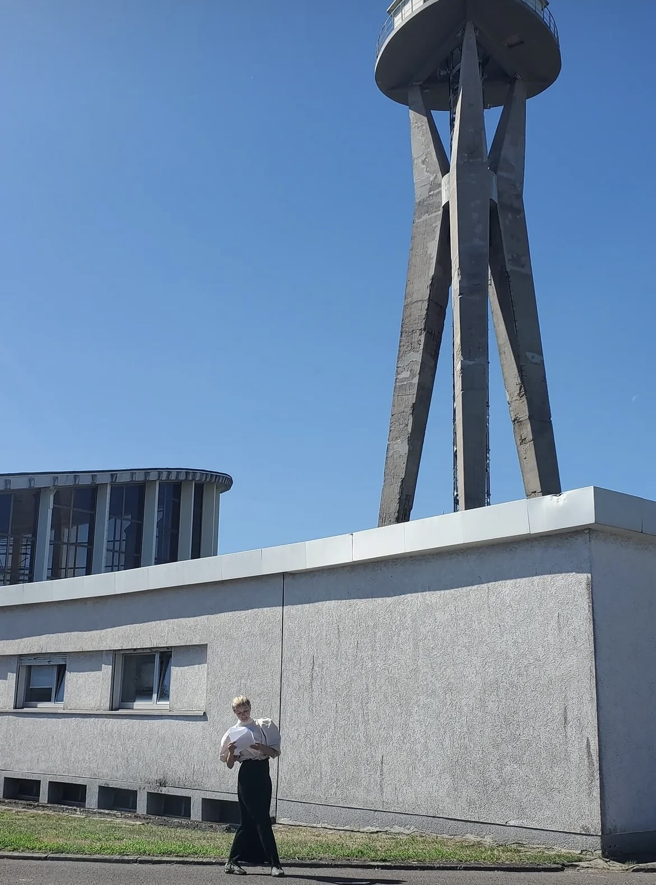
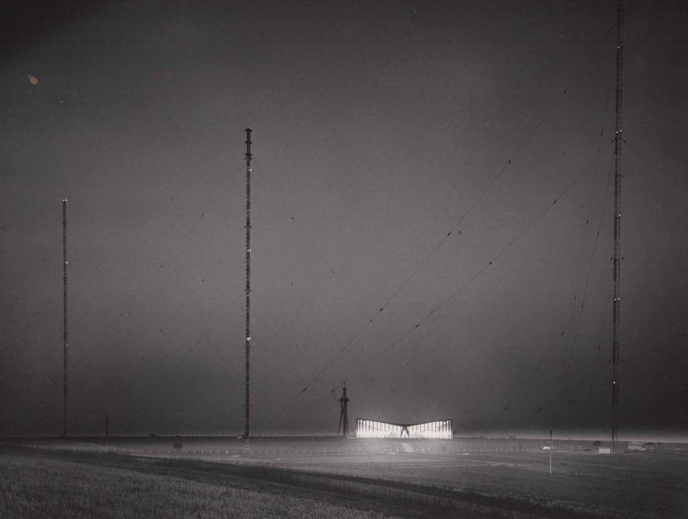
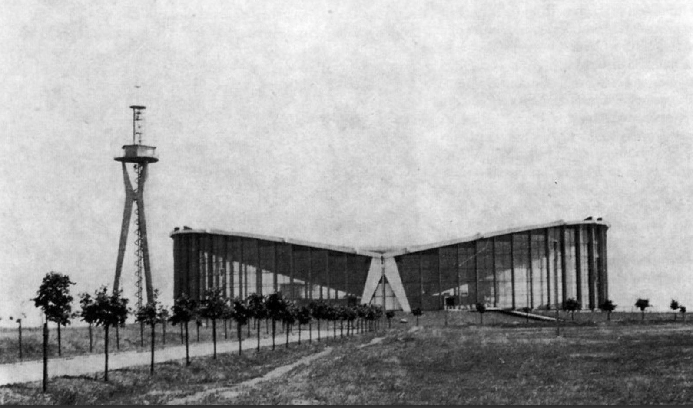

Resonances
série des performances, 2026 - en cours
Chaque performance prend pour point de départ un bâtiment ayant eu une fonction collective forte, aujourd’hui disparue, transformée ou déplacée. À travers archives, témoignages et rencontres, le bâtiment devient une porte d’entrée vers un territoire et les histoires qui le traversent. La performance prend la forme d’une déambulation. Le corps de la performeuse devient un dispositif de réception et de traduction : il reçoit les traces, récits et transformations du lieu, puis les traduit par la parole, le son, la marche, le geste et parfois la danse. Les spectateur·ices sont à leur tour invités à traverser, écouter et percevoir le territoire. La performance ne restitue pas une histoire figée, mais met en circulation différentes temporalités, entre mémoire collective et récits individuels, présence et absence. Le bâtiment devient ainsi un réservoir de traces et la performance, un espace temporaire où celles-ci peuvent être réactivées, transformées et partagées collectivement.
Volet 1 : Résonance d’Überherrn, 2026
30 min, en deambulation en français, sous titres en allemand imprimé, enceinte
C’est une performance prenant la forme d’une visite guidée du territoire autour de l’ancien bâtiment d’Europe 1 à Überherrn. Elle s’inspire de la fonction particulière du bâtiment entre 1955 et 2019, de son implantation sur le territoire et de l’évolution de la radio Europe 1 elle-même. Réalisée en français et sous-titrée en allemand, elle comprend également une création sonore diffusée à l’aide d’une enceinte.


